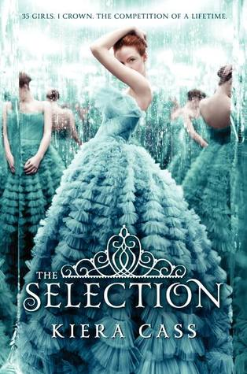

| It Ends With Us 3.5/5 Colleen Hoover has tackled some very important issues in this one, for which I have the utmost respect, but I just couldn't get past the nagging feeling that something was missing. Don’t get me wrong, there was a LOT going on in this story…maybe too much. So much that the plot grew a little rushed, and ultimately unconvincing. I honestly feel this book could have been split into two very powerful stories. I loved its candor… its bravery…its rough edges. I just wish certain issues were given more individual focus, even if that meant leaving out some detail in other areas of the plot. |
|  | The Selection 3.5/5 I was not expecting to like this book as much as I did (though everyone told me how addicting it was). It's definitely a book that is hard to put down. It's not necessarily the best writing (though I LOVED the world and world building) and I pretty much want to punch every character in the face all the time (and I'm assuming I will want to do that more throughout the next two books) but I still really enjoyed myself. Sometimes you just gotta read those books where you yell at the characters because they are SO DUMB but you love them anyway. Overall a really enjoyable fast read that I would recommend if you are looking for something light and not too serious - if you're in a reading slump this may help! |
 | The Fault in Our Stars 4/5 I really liked it, but I'm not fond of talks about the universe, existentialism and such, I ended up overthinking the talks that Augustus and Hazel had through the book (without really understanding them), and don't get me started with Van Houten, I understood 1/3 parts of what he said in all the book. And I don't think of myself as a dumb person, but as I said, that kind of deep talk is just not for me. Also, I didn't cry as I much as thought I would. Sure, I did cry, but I thought I was going to burst in tears and I didn't. But yeah, it will be not one of my favorite books, but I know I will remember it forever in my heart <3. |
| The Crow Girl 4.5/5 The Crow Girl is an exceptionally well-plotted crime novel- one of the darkest I've read in a long time. Structurally, the novel is led by the police investigation into a series of murders and child sex crimes (this is not for the faint hearted). To compliment the complex plot, these writers have also crafted some deeply complex characters- the line between hero and villain is ever blurred and highly fluid throughout. At its heart, this is more than a procedural crime novel- it is a meditation on cycles of violence and abuse. An outstanding read. | |
 | The Host 3.5/5 I wanted to like this book more than I did--to see that Stephenie Meyer can pick a topic not meant for shallow teenage girls and write on a deeper level--but I think this book is more of the same, sans the vampire excitement. I liked the idea: an alien soul inhibiting the host body of a girl who doesn't want to relinquish her control and the conflicts that arise, particularly in romance. There are some interesting topics, like what defines humanity and are we living worthy enough for the planet we are entrusted. The story isn't as page-turning as Twilight, but mulling nonetheless. |